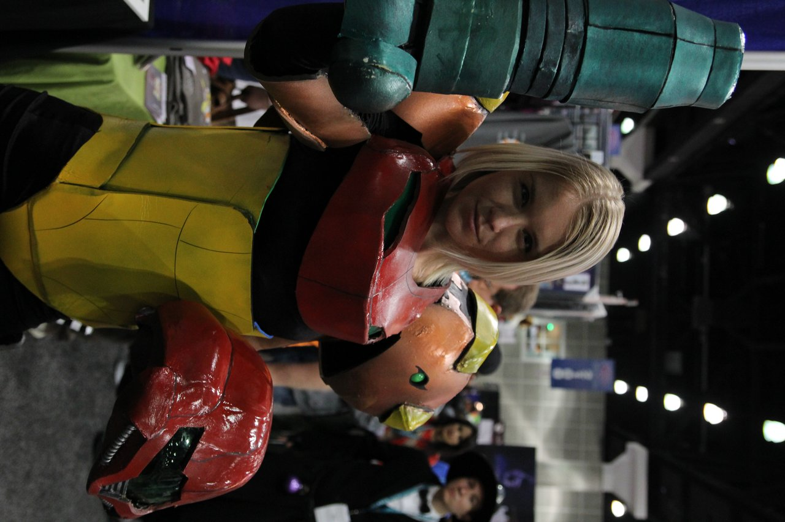
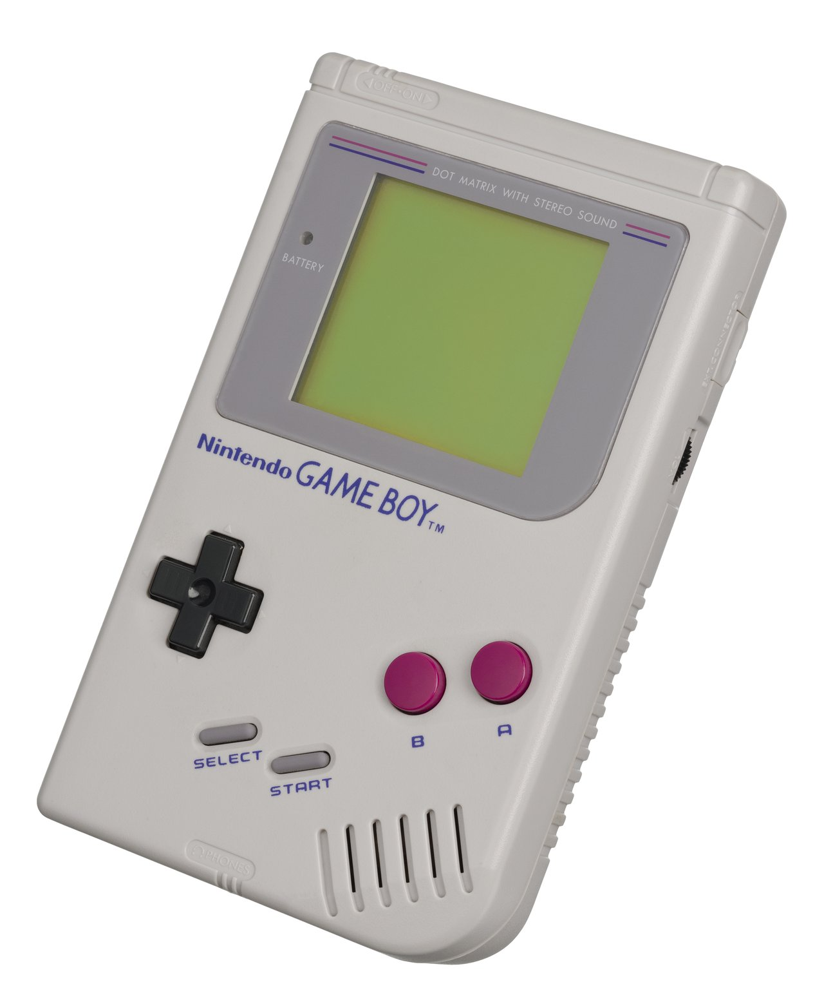
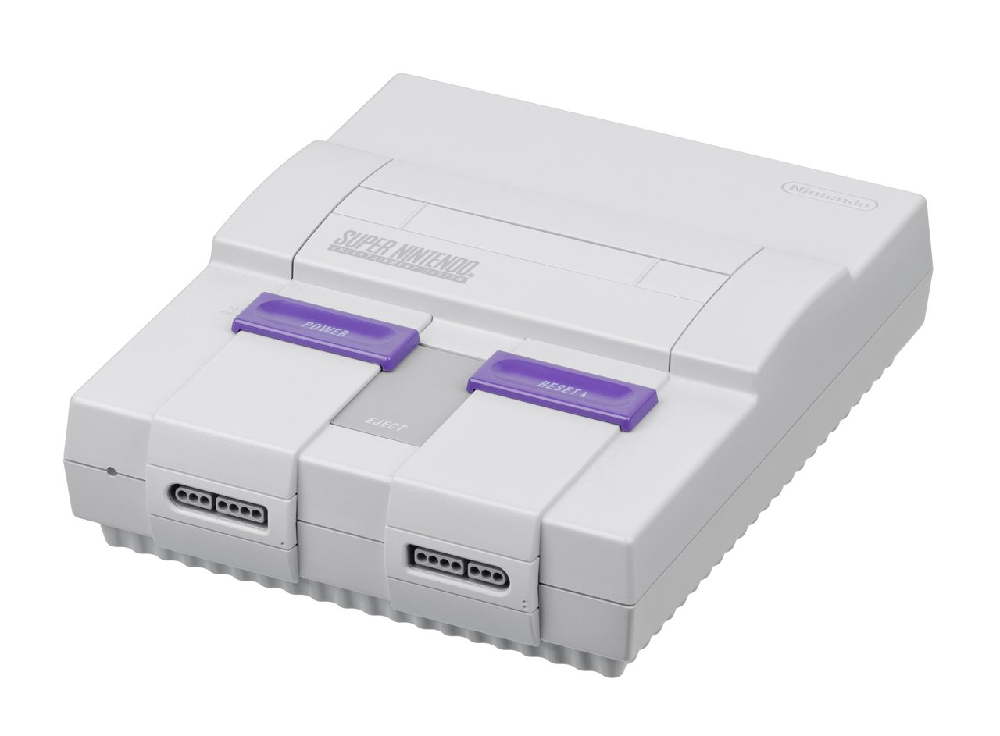
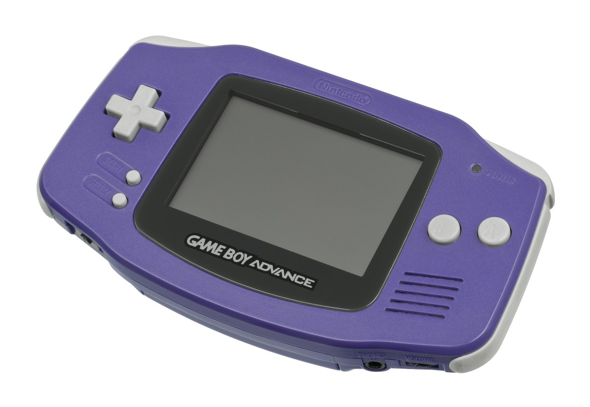
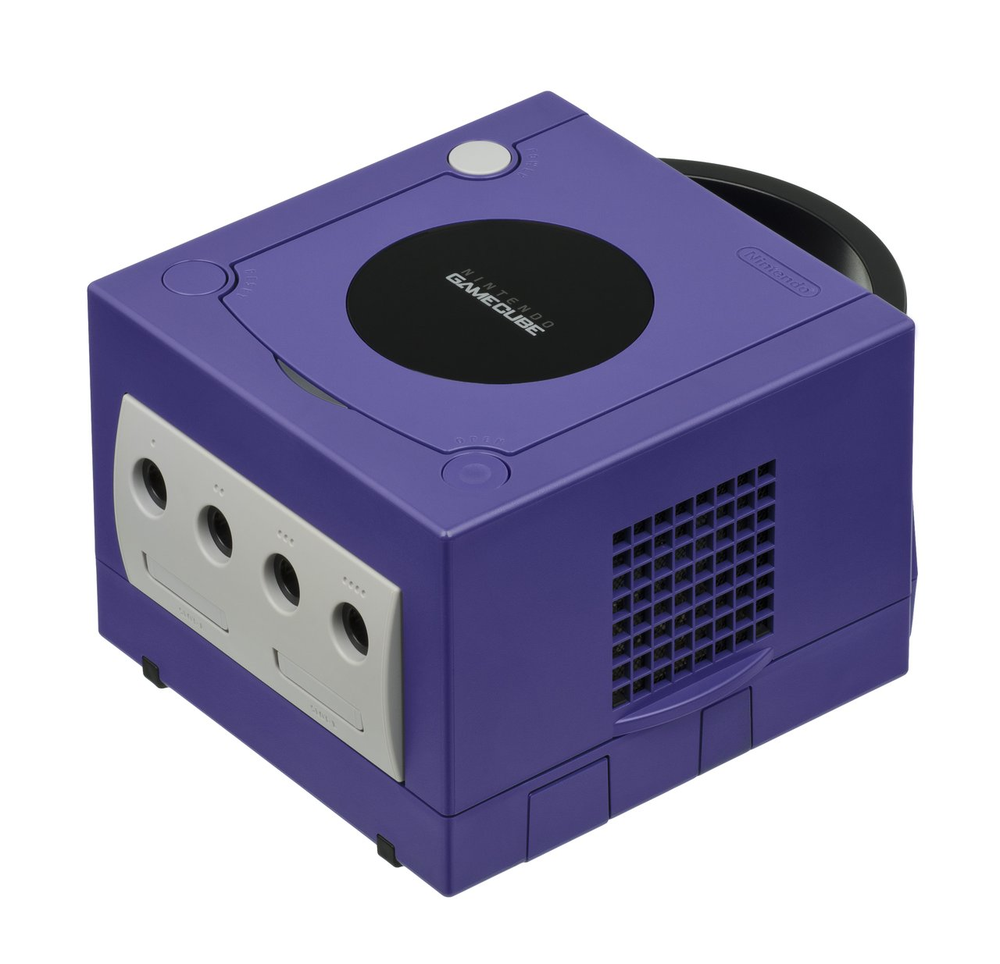
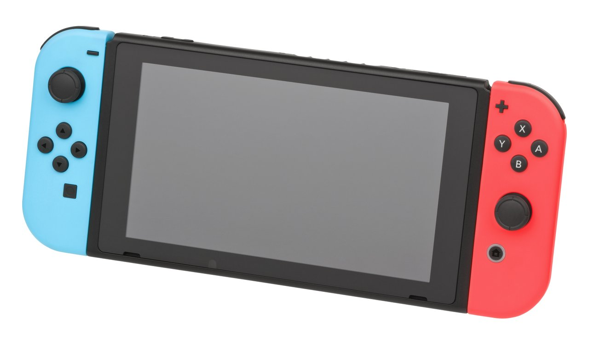
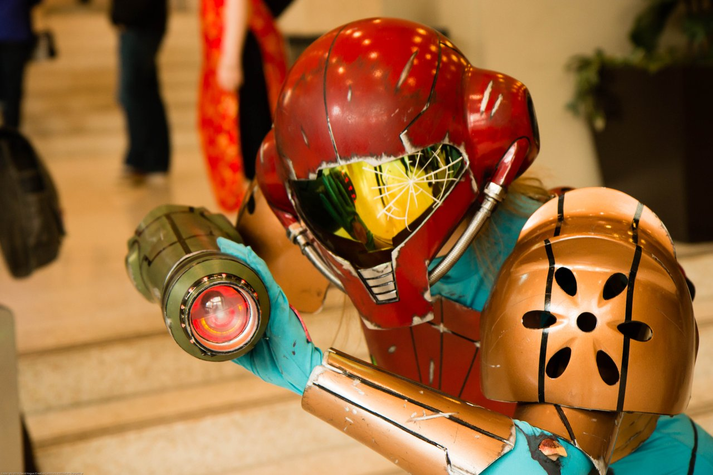
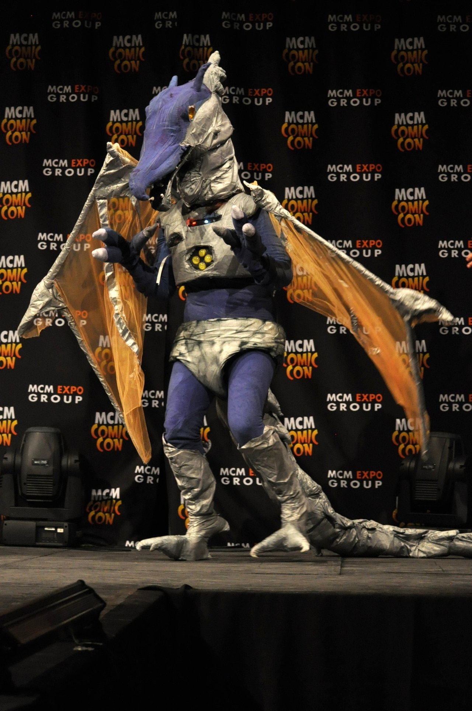
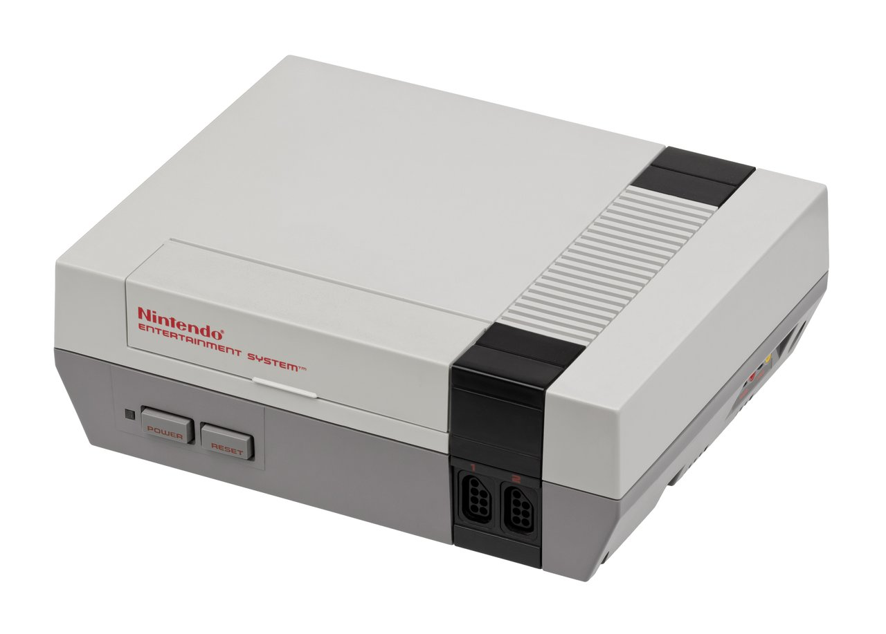

Metroid: stillheten i korridoren

Cosplay av Samus Aran, WonderCon 2016. Foto: William Tung / Wikimedia Commons. Lisens: CC BY-SA 2.0. (Fotolisens; ikke Nintendo-karakterlisens.)
6. august 1986 lanserte Nintendo Metroid til Famicom Disk System i Japan. Spilleren styrer Samus Aran alene gjennom planeten Zebes. Det originale spillet har ikke kart i pausemenyen. Lyddesignet er sparsomt: lange partier med lav eller repetitiv bakgrunnsmusikk, og effektlyder som betyr mer for romfølelsen enn en ørehengende melodi. Serien har holdt fast ved ensomhet, evnebasert utforskning og begrenset veiledning fra 1986 til Metroid Dread i 2021 — og det er fortsatt det som skiller den fra Nintendos mer forklarende førstepartstitler.
Nintendo er kjent for tilgjengelige serier som Super Mario, The Legend of Zelda og Animal Crossing. Metroid er en annen linje i katalogen: enspiller, få eller ingen følgefigurer i felt, og fremdrift som krever at du husker hvor oppgraderinger åpner nye ruter. Denne saken går gjennom milepælene og de konkrete designvalgene bak det. (Bilder: lisensierte hardwarefoto — ikke spillgrafikk eller boxart.)
1986: Metroid på Famicom Disk System
Metroid ble utviklet av Nintendo R&D1 og Intelligent Systems. Produsent var Gunpei Yokoi. Scenario: Makoto Kano. Yoshio Sakamoto var blant dem som jobbet med karakterdesign, og har senere vært sentral i serien som regissør og produsent. Lansering: Famicom Disk System 6. august 1986, NES i Nord-Amerika i august 1987, Europa i januar 1988.
Spillet er et sidescrollende action-eventyr. Det er ingen hub-by og ingen AI-følge. Nye våpen og evner — blant annet Morph Ball, bomber og Ice Beam — er permanente, og de endrer hvilke områder som er tilgjengelige. Uten innebygd kart må spilleren huske heiser, blindgater og dører som krever senere oppgraderinger.
Yoshio Sakamoto har i senere intervjuer pekt på Ridley Scotts film Alien (1979) som en påvirkning på stemningen, etter at spillkonseptet var på plass. Komponist Hirokazu «Hip» Tanaka laget et lydspor med få melodiske ørehengere; mye av spillet går på atmosfæriske, loop-baserte spor og effektlyder. Den mer markerte musikalske oppbyggingen kommer først mot slutten, blant annet rundt oppgjøret med Mother Brain.
Kart og «metroidvania»
I det første Metroid finnes det ikke et automatisk kart. Spilleren må selv holde orden på rom og forbindelser. Senere spill i serien — særlig fra Super Metroid (1994) av — legger inn kart som fylles ut etter hvert som du utforsker, men prinsippet er det samme: nye evner åpner gamle områder på nytt.
Ordet «metroidvania» brukes i dag om spill med ikke-lineær utforskning, permanente evner og tilbakevendende områder. Navnet kombinerer Metroid med Castlevania (særlig etter Symphony of the Night). For Metroid er belønningen for en snarvei ofte at du forstår layouten bedre — ikke bare at du får et nytt våpen.

1994: Super Metroid
Metroid II: Return of Samus kom til Game Boy i 1991 (Nord-Amerika november 1991; Japan og Europa 1992). Deretter Super Metroid til Super Nintendo: Japan 19. mars 1994, Nord-Amerika 18. april 1994. Regissør: Yoshio Sakamoto. Produsent: Makoto Kano. Utviklet av Nintendo R&D1 og Intelligent Systems.
Super Metroid utvider verdenskartet, legger inn automatisk kart i pausemenyen, og lar spilleren sikte i flere retninger (inkludert skrått via skulderknapper). Sequence breaking — å ta områder i annen rekkefølge enn den tiltenkte — er mulig, men rommene er koblet logisk via evner. Sammenlignet med mange samtidige konsollspill har Super Metroid lite veiledningstekst på skjermen; informasjon ligger i layout, fiendemønstre og hvilke dører som krever hvilke våpen.

2002–2004: Fusion, Prime og Zero Mission
Etter åtte år uten hovedspill kom to Metroid-titler i 2002. Metroid Fusion (Game Boy Advance, Nord-Amerika november 2002) har mer lineær oppdragsstruktur og mer tekstbasert fortelling enn Super Metroid. Metroid Prime (GameCube, Nord-Amerika 18. november 2002), utviklet av Retro Studios, er i første person, med skanning av miljø og loggbokposter som bærer verdensbyggingen.
Metroid: Zero Mission (Game Boy Advance, 2004) er en remake av det første spillet med moderne 2D-kontroller og kartfunksjon. Titlene viser at seriens kjerne — ensom utforskning og evnebasert fremdrift — ble overført til både 2D håndholdt og 3D stueformat.


Other M, Samus Returns og Dread
Metroid: Other M (Wii, 2010) satser tyngre på filmiske cutscenes og styrt fortelling. Mottakersiden og senere omtale har ofte trukket fram at spilleren får mindre frihet til å utforske i eget tempo enn i Super Metroid og Fusion. Titlene er likevel en del av seriens offentlige historie.
Metroid: Samus Returns (Nintendo 3DS, 15. september 2017) er en remake av Metroid II, utviklet av MercurySteam i samarbeid med Nintendo, med Sakamoto som produsent. Metroid Dread (Nintendo Switch, 8. oktober 2021) ble også laget av MercurySteam sammen med Nintendo EPD. Det er det første originale sidescrollende Metroid-hovedspillet siden Fusion.
I Dread møter spilleren blant annet E.M.M.I.-robotene: områder der Samus må snike, gjemme seg eller flykte, i tillegg til vanlig kamp og kartlesing. Fremdriften krever fortsatt at du kobler nye evner til gamle rom. Vurdering: Dread viser at serien kan bruke eksplisitt jakt-mekanikk uten å erstatte den gamle utforskningskjernen — basert på hvordan E.M.M.I.-sonene og evnesperrene er bygget inn i kartet.




Hva som skiller Metroid i 2026
Mange samtidige action-eventyr bruker kartmarkører, oppdragspiler og veiledningstekst. Metroid-titlene — særlig Super Metroid, Prime og Dread — gir færre slike hjelpemidler. Spilleren må lese dørtyper, fiendemønstre og eget kartutsnitt.
Det er derfor serien fortsatt er et nyttig referansepunkt når Nintendo lanserer ny hardware: katalogen inneholder både spill med høy veiledning (mange Mario- og Animal Crossing-titler) og spill som krever mer egen kartlesing (Metroid). Yokoi (R&D1), Sakamoto, Retro Studios og MercurySteam har levert ulike formater, men samme grunnstruktur: enspiller, permanente evner, tilbakevendende områder.
Kort oppsummert
Fra Famicom Disk System i 1986 til Switch i 2021 har Metroid beholdt tre etterprøvbare trekk: Samus opererer alene i felt, fremdrift styres av permanente oppgraderinger, og veiledningen på skjermen er ofte sparsom sammenlignet med andre Nintendo-serier. Det er den røde tråden: konkrete systemvalg som fortsatt er synlige i Dread.
← Tilbake til nyheter · Uoffisiell fanside — ikke tilknyttet Nintendo. Hardwarefoto: Evan-Amos / Wikimedia Commons (public domain). Cosplay: se figtekster (CC BY/BY-SA); fotolisens er ikke Nintendo-karakterlisens.